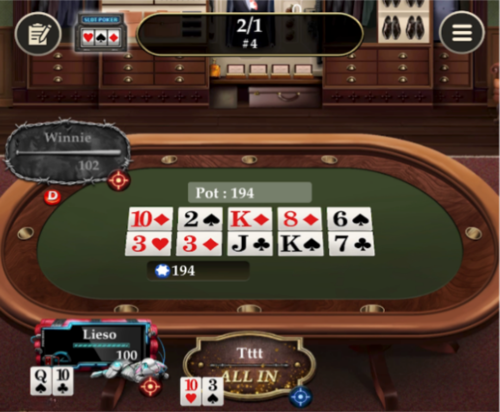

What Is Double Board Poker?
Double board poker is a variation where two separate community card boards are dealt instead of one. Each board runs independently, and the pot is split between the best hand on each board at showdown.
Instead of fighting over a single outcome, players now compete on two boards at the same time. This changes how hands are valued and makes double board poker strategy more nuanced than standard formats.
At its core, double board poker is:
- Easy to learn if you already know Hold’em or PLO
- More action-oriented, with fewer “all-or-nothing” outcomes
- Ideal for friendly, casual games where everyone stays involved Ready to try it with your group? Learn how to set up a private table in minutes on Pokerrrr 2

How Double Board Poker Works (Hold’em vs PLO)
The basic flow of the game remains the same as traditional poker. The key difference is what happens after the flop.
Double Board Hold’em
In double board holdem, each player receives two hole cards, just like standard Texas Hold’em. After the flop, turn, and river are dealt, two full boards are completed side by side.
- Each board has its own best hand
- The pot is split evenly between Board A and Board B
- One player can win both boards, or two players can each win one
Because Hold’em hands are more defined, players often aim for strong but flexible hands that can compete on both boards.
Double Board PLO
In double board plo, players receive four hole cards and must use exactly two of them for each board. This naturally creates more combinations and more draws.
- Nut potential becomes extremely important
- Scooping both boards is harder but very rewarding
- Hands that can make strong results on both boards gain extra value
If you’re deciding which version fits your group better, it helps to understand the broader differences between Hold’em vs PLO and how PLO poker naturally creates more action.
Quick Comparison: Single Board vs Double Board Hold'em
| Feature | Single Board Hold'em | Double Board Hold'em |
|---|---|---|
| Community Cards | 1 board (5 cards) | 2 separate boards (5 cards each) |
| Hole Cards Per Player | 2 | 2 (same hand for both boards) |
| Pot Distribution | Winner takes all | Pot split 50/50 between board winners |
| Hand Rankings | Standard | Standard (per board) |
| Best For | Standard play | Action junkies, home games, variance lovers |
| Available On | All poker platforms | Limited (Pokerrrr 2 is one of few) |
| Average Pot Size | Standard | Larger (more all-in scenarios) |
| Strategic Complexity | Moderate | High (must evaluate two boards) |
Key Double Board Poker Rules Explained
While the concept is simple, a few rules are essential to get right from the start.
The Pot Is Always Split
At showdown:
- Half the pot goes to the best hand on Board A
- The other half goes to the best hand on Board B
Even if one player dominates a single board, they only win that half unless they scoop both.
One Hand Per Board
You must use the same hole cards across both boards:
- In Hold’em: any five-card hand using your two hole cards
- In PLO: exactly two hole cards and three community cards per board
You cannot mix boards or use different hole cards for each.
Ties Still Matter
If two players tie on one board, that half of the pot is split again. This makes double board poker more forgiving and keeps more players in the hand longer.
Split Pot Strategy: What Most Players Get Wrong
The biggest mistake in double board poker strategy is overvaluing one-board hands.
Many players get excited about a monster hand on one board and forget that the other board still exists. Winning only half the pot often isn’t enough to justify big commitments.
Common Strategic Errors
- Chasing one strong board while ignoring the other
- Overplaying hands that are “locked” on only one side
- Forgetting that medium strength on both boards can outperform strength on just one
Smarter Strategic Thinking
Strong double board strategy focuses on:
- Hands with equity on both boards
- Nut draws that can improve across multiple runouts
- Avoiding situations where you’re drawing dead on one board
In casual games, this mindset not only improves results but also leads to more interesting decisions and conversations at the table.
Why Double Board Poker Creates Bigger Pots
Double board poker naturally leads to bigger pots and more action—without increasing risk or complexity.
Here’s why:
- Players are less likely to fold when they have chances on two boards
- Split pots reduce fear of losing everything in one spot
- Draw-heavy situations encourage continued play
For friendly games, this creates:
- More turns and rivers seen
- More shared excitement at showdown
- A relaxed, social atmosphere where everyone stays engaged
This is exactly why double board formats are often featured among poker games to play with friends and other fun poker formats for groups.
FAQs About Double Board Poker Strategy
Q1: What is double board poker?
A: Double board poker deals two separate community boards simultaneously. Players compete for two pots — one for each board. The same hole cards are used for both boards.
Q2: Can you play double board in both Hold'em and PLO?
A: Yes. Double board works with Texas Hold'em (2 hole cards) and PLO (4 hole cards). PLO double board creates even more action with more possible hand combinations.
Q3: Is double board poker good for home games?
A: Absolutely. Double board is one of the most popular private game formats — it doubles the excitement without adding complexity. You can set up a double board game instantly on Pokerrrr 2.
Q4: Does double board poker change hand rankings?
A: No. Standard poker hand rankings apply to each board separately. You can win one board, both boards, or none.
About Pokerrrr 2
Pokerrrr 2 is a mobile poker app available on iOS and Android that lets you host private poker games with friends or join public tables with players worldwide. Supported formats include Texas Hold'em, Omaha (PLO), Short Deck, Sit & Go, Double Board Hold'em, and Open Face Chinese (OFC). Games are play-money only and no real-money gambling is supported within the app.
Play Double Board Poker on Pokerrrr 2
If you’re excited to try double board poker in a real game, Pokerrrr 2 makes it easy to set up and play with friends.
Pokerrrr 2 lets you host private poker tables, invite friends and enjoy fun formats like Double Board Poker in a relaxed, casual environment. Whether you prefer Hold’em or PLO, you can explore different game styles without pressure—just great cards, good company, and more action on every hand.
👉 Download the Pokerrrr 2 app and start a Double Board game with your friends anytime, anywhere.